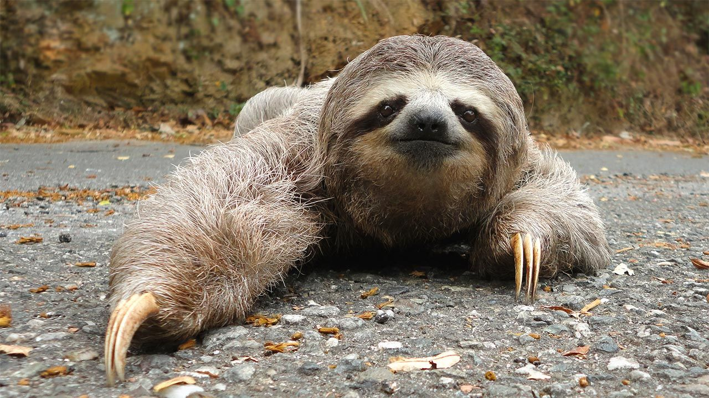

oso perezoso
L'os morrut és una espècie de mamífer carnívor de la família dels ossos. És un animal d'hàbits majoritàriament nocturns que visqué històricament a les praderies i els boscos de planúria de l'Índia, el Nepal, Bangladesh, Sri Lanka i possiblement el Bhutan
| osos | oso perezoso | oso hormigero |
|---|---|---|
| oso gris | oso lento | oso ingenioso |
| anchura 105 mm | anchura 100 mm | anchura 110 mm |
| especies en el mundo 8 | especies en el mundo 6 | especies en el mundo 4 |